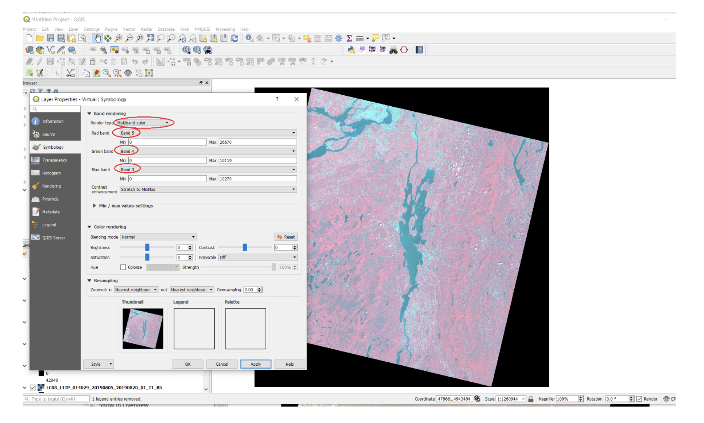

4. Downloading Multiple Layers and Making Maps
A typical GIS project involves working with multiple map layers overlaid on each other through a common coordinarte system. Some of the layers may be vectors while others may be vectors. An important objective of this lab is to help you develop the ability to visually recognize and distinguish between popular GIS raster and vector data products such as shapefiles, orthophotos, DEMs, satellite imagery, and WMS and WFC layers.
Additionally, the lab seeks to help you do the following:
develop basic file management skills necessary to deal with the large number of files that are typically needed for a GIS project.
become comfortable with smoothly loading and displaying multiple map layers into QGIS and rearranging the layers to suit your information needs.
become comfortable interpreting details on various types of spatial data.
develop cartographic skills needed for effective presentation of multiple map layers.
4.1. Assignment
In this lab, you will firstly download, display, arrange, and explore multiple layers of spatial data for a selected county in Michigan. In this section of the lab, the emphasis is on unzipping multiple files and proper storage of downloaded data.
In the second part of the lab, you will extend your cartographic skills by usign the downloaded data to prepare professional quality layouts.
You should download at least 8 different layers. The layers should include at least 3 shapefiles, a DEM, satellite imagery covering any part of the county, an OGC web map layer, an ArcGIS Server Rest Service layer, and one or more orthophoto (aerial photo) tiles.
In some cases, the map layers may not match the extent of the county boundary. For example, the orthophoto tile will cover just a small part of the county, not the entire county. Also, some layers may be Michigan-wide layers or a US-wide layers. In this lab, we wouldn’t focus on clipping or merging layers. We will just download layers and make pretty maps.
NB: I have downloaded data for Wayne County and have made them available on Canvas for those who do not as yet feel comfortable downloading data from government websites.
For submission, create the following maps:
A map consisting of three or four vector layers showing the relationship between bedrock geology, water wells, townshhips, and urban areas.
A map showing the Digital Elevation Model you downloaded.
Maps showing the satellite imagery you downloaded displayed in the following band combinations: 5-4-3; 5-6-4 and 7-6-4.
A map showing either the orthophoto tile or tiles you downloaded.
A map showing mines in the USA based on web services data that you accessed.
4.2. Download and Unzip Files
Download Files
Create a folder on your computer to store all the downloaded data.
Decide on a Michigan county of your choice, then visit the Michigan CGI archived GIS website to download data.
Inspect the different categories of data and download the layers for the county of your choice. Note: You can find digital elevation models and satellite imagery color composites under the TOPOGRAPHY section. Orthophotos are no longer available at this site.
If you are having trouble downloading from the CGI website, you can visit the new Michigan GIS Data Portal website and search for appropriate data
Alternatively, you can simply download layers for Wayne County which I have placed on CGithub.
Unzipping Files
Unzip the layers to the single folder you created, as shown below. When your project is completed, you can delete the original zipped files you no longer need.

4.3. Loading and Displaying Shapefiles
ESRI’s shapefile is one of the most common vector data file formats. One way of loading a shapefile into QGIS is to click on Layer | Add Layer | Add Vector Layer, as shown below.
A second method is to click on the Data Source Manager button (or press the Ctrl + Shift + V keyboard shortcut) to bring up the Data Source Manager dialog, which can be used to open different types of Layers.
4.4. Loading and Displaying the DEM
1 To display the DEM in QGIS, click on Layers | Add Raster Layer, then navigate to the folder where the DEM is stored, e.g, C:/Wayne_dem24_30m/Wayne/Topography/dem/.
Select the file named w001001.adf. Make sure it is the adf file with the larger file size.
If the DEM is loaded and doesn’t show up, simply right click on it and select Zoom to Layer.

The numbers below the name of the DEM in the Table of Content refer to elevation in ft. If you click on the Identify button then click anywhere on the map, it will return the elevation at that location.
To change the color of the DEM, double click on its name in the Table of Content and select Symbology. Change the Render Type from SingleBand Gray to SingleBand Psuedocolor.
Select a color ramp that suits your taste. Make sure the color ramp does justice in showing the subtle variations in elevation.
You can also click on the Classify button and experiment with the impact that different classifications methods have on the visual appearance of the DEM.
4.5. Loading and Displaying Orthophoto Tiles
Click on Layers | Add Raster Layer and navigate to the folder where the file is stored.
There may be more than one files associated with the orthophoto. Select the file that has a raster format ending, e.g., .tif, .ing, .sid, .png, etc., and add it to the display.
4.6. Loading and Displaying Landsat Imagery
Visit the Earth Explorer website (https://earthexplorer.usgs.gov/) and download Landsat 8 imagery for an area of interest. If you are not familiar with the downloading process, click on this link for instructions on this process. You can also download a Landsat imagery datset from Canvas.
The Landsat imagery that you download will contains several layers or bands all of which pertain to the same area. After unzipping the data, load the files into QGIS by selecting the desired layers, as shown below.
After the files are loaded, they should appear as shown below. You can uncheck and then recheck each layer to observe it in detail. You can also zoom in and inspect different parts of the imagery.

Click on Raster in the main menu, then select Miscellaneous | Build Virtual Raster. This step will combine the rasters into a single layer. Fill out the dialog that appears.
Select the layers you want to use. I selected bands 1 through 8. Click OK when you are done.

In the main menu, click Run in Background. A new layer called “Virtual” will be created.
Right click on the layer named “Virtual” and select Properties.
8. To generate an image that represents a 5-4-3 band combination, fill out the dialog similar to the illustration below. The key selections are as follows: * Render Type: Multiband Color * Red Band – 5 * Green Band – 4 * Blue Band - 3.
When you are done, click Apply to view the image. Afterwards, click Ok.
As you may be aware, the Landsat 8 5-4-3 band combination is the traditional False Color Infrared image. It is good for identifying different types of vegetation as well as their health. Healthy vegetation appears bright red. Each shade of red represents a different type of vegetation. From visual inspection, we can detect many shades of red, however, the computer can detect lots more shade.
Now, display an image using a 5-6-4 band combination. This is also a popular band combination for looking at vegetation cover. It contains two infrared bands (bands 5 and 6). Different vegetation types can be clearly defined, appearing as shades of orange and green.
In the 5-6-4 band combination, land/water interface is very clear and for this reason, this is probably the most common band combination in Landsat 8 for differentiating between land and water. Lakes and ponds of varying sizes can be easily identified. Water appears in shades of dark blue to black. Ice, if present, stands out as a vibrant magenta color.
13 Display an image using a 7-6-4 band combination. This combination is useful for visualizing urban environments, particularly in situations where haze is an issue.
4.7. Loading and Displaying a WMS Layer
To Add a WMS Layer, do the following:
In QGIS, click on Layer | Add WMS/WMTS Layer.
Select “New” in the Data Source Manager dialog box.

In the ‘Create a new WMS connection’ dialog, enter a name for the conection and the appropriate URL (e.g. https://mrdata.usgs.gov/services/active-mines?version=1.3.0)
Select OK.
In the Sever Connection dialog, select “Connect” and then “Add”. THe WMS layer should now be added.
Select Close.
4.8. Loading and Displaying an ArcGIS REST Service Layer
To Add an ArcGIS Server Layer, do the following:
In QGIS, click on Layer | Add ArcGIS Rest Server Layer.
Select “New” in the Data Source Manager dialog box.

In the ‘Create a new ArcGIS Rest Server connection’ dialog, enter a name for the conection (e.g., NAIP Imagery), and the appropriate URL (e.g. https://gis.apfo.usda.gov/arcgis/rest/services/NAIP/USDA_CONUS_PRIME/ImageServer?)
Select OK.
In the Sever Connection dialog, select “Connect”.
When the NAIP Imagery connection appears, expand it then select the web map layer. Click “Add”. The NAIP imagery layer should now be added. Select Close.

The NAIP imagery should now appear in the map area of QGIS.
For more information, please view this YouTube Video.
4.9. Explore your Data
One of the requirements of this lab is for you to create professional quality maps using the layers you downloaded. One important contributor to making attractive maps is that you should know your data, so let’s explore the map layers we just displayed.
Locate the Identify Tool then click on each map layer to investigate the map attributes at particular locations. Study the results carefully. In the case of shapefiles, they represent the contents of the attribute table at that location. For rasters such as DEMs or satellite imagery, they represent the contents of cell values at that location.
Using the Identify tool, click anywhere on the digital elevation model to get the elevation at different locations.
Locate the Measure Tool as shown below. Click it and then explore how to measure distances and areas on the map.
Measure the length of the sides of the orthophoto. How much area does one of these photo cover?
Right click on the name of each shapefiles and open the attribute tables of the map layers. Try to understand the information they contain.
4.10. Prepare Professional Maps of your Data
Prepare the Shapefiles
One of your goals is to create a professional quality map using only the shapefiles. It is easier if you decide on a theme. For example, I will use my layers try to show water wells in relation to urban areas in Wayne County.
Uncheck all the layers except the shapefile.
Rearrange the order of the shapefiles to suit your preference by dragging them up and down in the Table of Contents. Check to see if some of the layers at the top of the list are hiding others below. If so, further re-arrange the layers. One rule we use is that point features should be at the top of the set, followed by layers that contain line features, then those that contain area features.
Change the color of the layers. To do so, double click on the map icons of each layer, then go to Symbology and change the color to a color that you like.
Experiment with happens when you click on “Fill” versus when you click on “Simple Fill”. You will may find yourself using Simple Fill more often.

6 You may want to use no fill color for some of the layers, relying on the outline to provide the color. This will allow you to see right through the layer to other layers below.
Change Stroke or line widths to show emphasis.
Double click on the name of the layer, then go to Source and from there you can change the layer name.

9• My final map appears as shown below.

Go to the Composer and compose the final map.
Click on Layout | Export as Image. Select a path and a name for the exported image. Once you are satisfied with the map, you can export it PNG format. The image can be uploaded to Canvas Dropbox.
4.11. Section 4 Landsat Explorer
ESRI has a web mapping application called `Landsat Explorer <https://livingatlas2.arcgis.com/landsatexplorer/>`_that can be used to quickly create Color Composites. With this application all the bands are preloaded, so there is no need to download data.
Open Landsat Explorer and locate San Francisco.
Display Landsat imagery using a 5-4-3 combination. Comment on vegetation patterns you notice in the imagery. Zoom in to see patterns clearer.
Display Landsat imagery using a 7-6-4 combination. Comment on how well you can detect urbanized areas in this imagery, particularly when you zoom in.
What is NDVI? (See Module 2.7). Display San Francisco using the NDVI index (Tip: use “Vegetation Index”. Also, make sure you click on the question mark next to this renderer to learn more about it).
Where in the San Francisco region would you find areas that have moderate NDVIs (between 0.2 to 0.3) and high NDVIs (0.6 to 0.9).
Example Maps
Digital Elevation Model

4.12. Summary of Deliverables
A professional quality map consisting of three or four vector layers showing the relationship between bedrock geology, water wells, and urban areas.
A professional quality map showing the Digital Elevation Model you downloaded.
Screenshots showing the satellite imagery you downloaded displayed in the following band combinations: 5-4-3; 5-6-4 and 7-6-4.
A short write up-of the usefulness of the different band combinations that you displayed.
A professional quality map showing either the orthophoto tile or tiles you downloaded.
A professional quality map showing mines in the USA based on web services data that you accessed.
Screenshots of satellite imagery band combinations that you generated using Landsat Pro and associated comments.